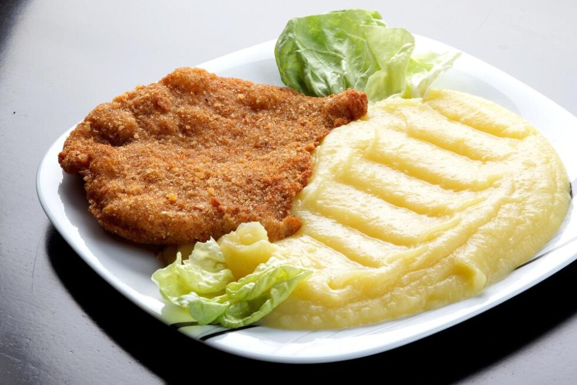

MILANESA CON PURE  Pasos: Pasar la carne por huevo y pan rallado Freír en aceite caliente hasta dorar Hervir papas y pisarlas con manteca y leche Servir caliente con limón
TACOS CON CARNE Pasos: Cortar carne en tiras finas y saltear con cebolla y morrón Condimentar con ají molido, comino y pimentón Calentar las tortillas de maíz en una plancha seca Rellenar y agregar palta, limón y salsa picante a gusto